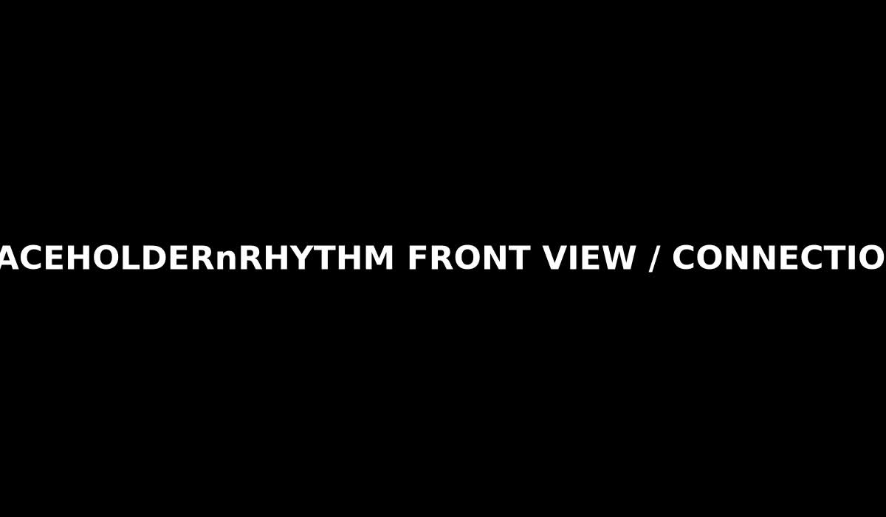
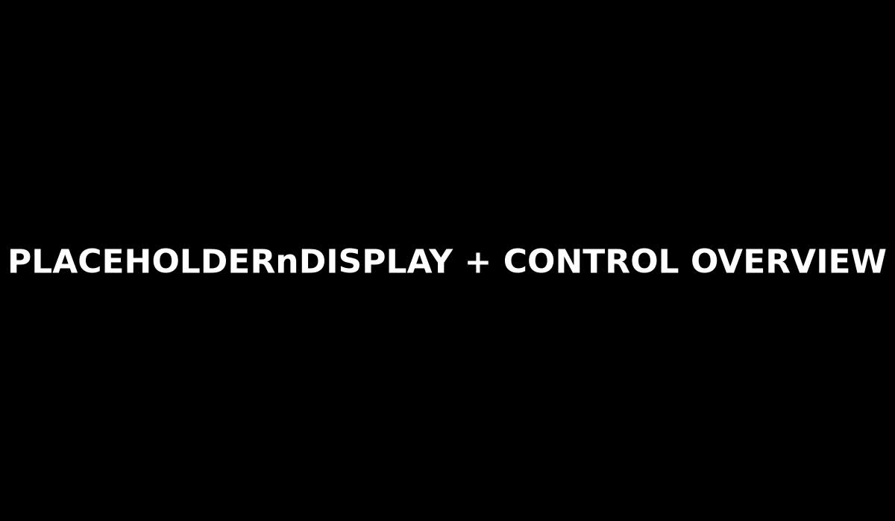
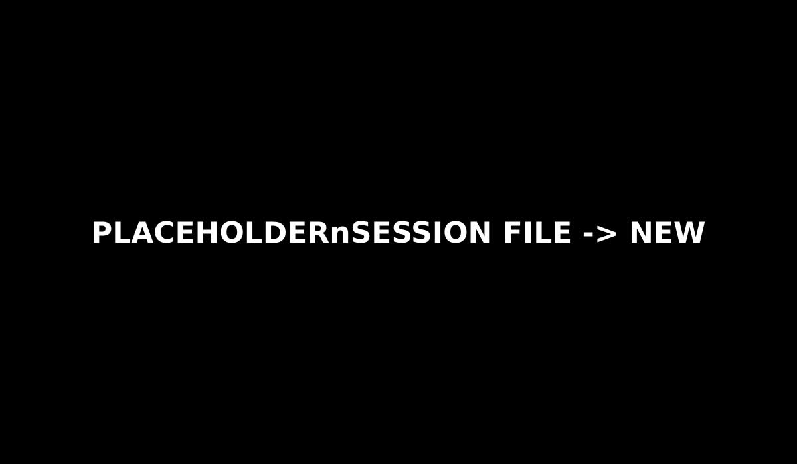
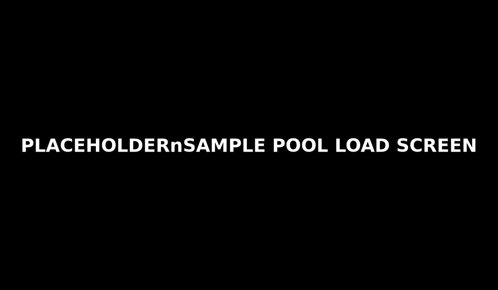
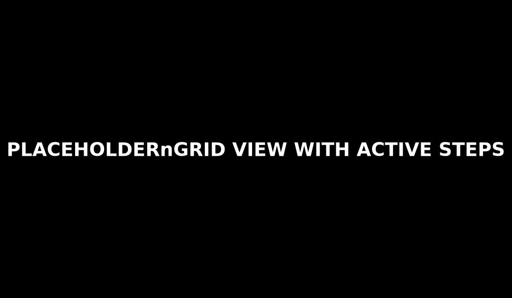
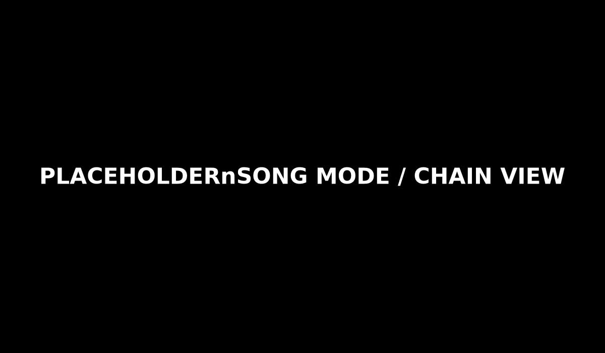

Power on. Make a beat. Save something real.
RHYTHM is a compact hardware groovebox for building beats, patterns, and song ideas fast with a tactile, hands-on workflow. This guide is tuned for a first successful session: power on, load sounds, program a pattern, build a variation, chain it into a song, and save your work.
Before You Start
What you need
- RHYTHM with the included Micro SD card and samples
- USB-C power
- Headphones, speakers, or a mixer connected to audio out

Getting Familiar with RHYTHM
Display
- Mode name and view name
- Play/Stop indicator
- Current Pattern (example: P01)
- Sequencer position
- Parameters for the current view
- Current Track (example: T1)
- BPM
Transport
- Left and Right move through views
- Hold Function + Left = Play / Stop
- Hold Function + Right = Select Pattern with Button Grid
Button Grid
- Buttons change purpose depending on the current mode.

Power On
- Connect audio out to headphones, speakers, or a mixer.
- Connect USB-C power.
- Turn RHYTHM on with the power switch on the left side.
When startup completes, RHYTHM opens in Pattern mode, Grid view, and is ready to use.
Moving around the user interface
- Press Left or Right to cycle through views in the current mode.
- Hold Function and press grid buttons 1-8 to select tracks.
- Hold Function and press grid buttons 9-16 to change modes.
- The Encoder can edit values, scroll views, and confirm actions.
Editing values
- Turn the encoder to move through the parameters shown on the right side of the screen.
- Press the encoder to select a parameter.
- Turn the encoder to change the selected value.
- Press the encoder again to deselect it.
Step 1 — Create a New Session
- Hold Function and press the SESS (Session) button.
- Press Right until you reach SESSION FILE view.
- Use the encoder to select NEW and press the encoder.
- Confirm YES.

Make Your First Pattern
Step 2 — Load Sound
- Hold Function and press the SMPL (Sample Pool) button.
- Use Left / Right buttons to select your sample slot (1-32).
- Use the encoder to select LOAD, then press the encoder.
- Use the encoder to scroll through the sample list.
- Press the encoder to load or preview a sample, or to open a folder.
- Select [BACK] if needed and then [EXIT] to complete the loading process.

Step 3 — Select a track and choose a sound
- Hold Function and press the TRCK (Track) button.
- Hold Function and press one of track buttons T1-T8 to select a track.
- Use Left / Right to go to the TRACK ENGINE view.
- Use the encoder to select SND.
- Press the encoder to change the SND value to the sound you want.
Step 4 — Start the Sequencer
- Hold Function and press the Left / Play transport button.
Step 5 — Program a Pattern
- Hold Function and press the PTRN (Pattern) button.
- Hold Function and press one of track buttons T1-T8 to select the track you want to program.
- Use Left / Right to select Grid view.
- Press grid buttons to add or remove notes.
- Adjust note, velocity, and length with the encoder.

Choose Another Pattern
- Hold Function and press the Right / Pattern transport button.
- The button grid shows which pattern is currently selected.
- Select grid buttons 1-16 to choose a different pattern.
Build a Simple Song Chain
- Hold Function and press the SONG button to enter Song mode.
- Press Left to switch the sequencer play mode between PTN and SNG.
- Set the play mode to SNG.
- Use the encoder to scroll through song steps.
- For each song step, choose which pattern should play there by holding Function + Right / Pattern and pressing the Grid button of the pattern you want.
Song mode basics
- In SNG mode, RHYTHM plays song steps in sequence.
- Press Right to toggle loop ON or OFF.
- The end of the song is the first step without a pattern assigned.
- If loop is ON, the song repeats.
- If loop is OFF, playback stops at the end.
- Grid buttons 1-8 control song-step track on/off.
- Grid buttons 9-16 control mutes.

Save Your Session
- Hold Function and press the SESS (Session) button.
- Press Left or Right until you reach FILE.
- Use the encoder to choose SAVE.
- Press the encoder to open name entry.
- Enter a name by selecting characters.
- Choose SAVE and press Encoder.
Load a Session
- Hold Function and press the SESS (Session) button.
- Press Left or Right until you reach FILE.
- Choose OPEN.
- Use the encoder to select a saved session.
- Press the encoder to load it.
Troubleshooting
- No sound: Confirm audio is connected.
- Sample track silent: Confirm the Micro SD card is inserted and samples are loaded in Sample Pool.
- Song playback not changing step: Confirm the play mode is set to SNG instead of PTN.
- Work disappeared: Save the session before powering off.
Support
Web: https://zeroneng.com
Discord: https://discord.gg/RzFStZty4
Pattern Mode
Reference page for RHYTHM pattern mode with five placeholder view sections ready for screenshots, instructions, and notes.
Views
This page covers Pattern mode. Use the view anchors below to jump directly to the section you want to document.
Pattern — View 1
Pattern — View 2
Pattern — View 3
Pattern — View 4
Pattern — View 5
Track Mode
Reference page for RHYTHM track mode with five placeholder view sections ready for screenshots, instructions, and notes.
Views
This page covers Track mode. Use the view anchors below to jump directly to the section you want to document.
Track — View 1
Track — View 2
Track — View 3
Track — View 4
Track — View 5
Mixer Mode
Reference page for RHYTHM mixer mode with five placeholder view sections ready for screenshots, instructions, and notes.
Views
This page covers Mixer mode. Use the view anchors below to jump directly to the section you want to document.
Mixer — View 1
Mixer — View 2
Mixer — View 3
Mixer — View 4
Mixer — View 5
Song Mode
Reference page for RHYTHM song mode with five placeholder view sections ready for screenshots, instructions, and notes.
Views
This page covers Song mode. Use the view anchors below to jump directly to the section you want to document.
Song — View 1
Song — View 2
Song — View 3
Song — View 4
Song — View 5
Scope Mode
Reference page for RHYTHM scope mode with five placeholder view sections ready for screenshots, instructions, and notes.
Views
This page covers Scope mode. Use the view anchors below to jump directly to the section you want to document.
Scope — View 1
Scope — View 2
Scope — View 3
Scope — View 4
Scope — View 5
Sample Pool Mode
Reference page for RHYTHM sample pool mode with five placeholder view sections ready for screenshots, instructions, and notes.
Views
This page covers Sample Pool mode. Use the view anchors below to jump directly to the section you want to document.
Sample Pool — View 1
Sample Pool — View 2
Sample Pool — View 3
Sample Pool — View 4
Sample Pool — View 5
Calculator Mode
Reference page for RHYTHM calculator mode with five placeholder view sections ready for screenshots, instructions, and notes.
Views
This page covers Calculator mode. Use the view anchors below to jump directly to the section you want to document.
Calculator — View 1
Calculator — View 2
Calculator — View 3
Calculator — View 4
Calculator — View 5
Settings Mode
Reference page for RHYTHM settings mode with five placeholder view sections ready for screenshots, instructions, and notes.
Views
This page covers Settings mode. Use the view anchors below to jump directly to the section you want to document.